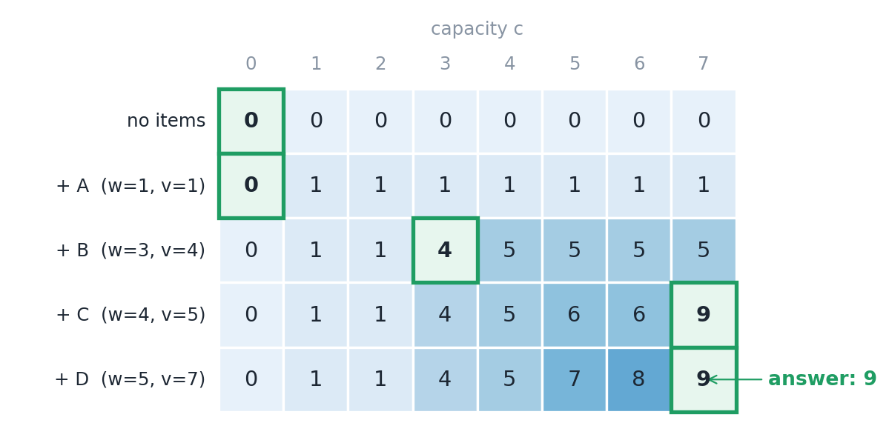
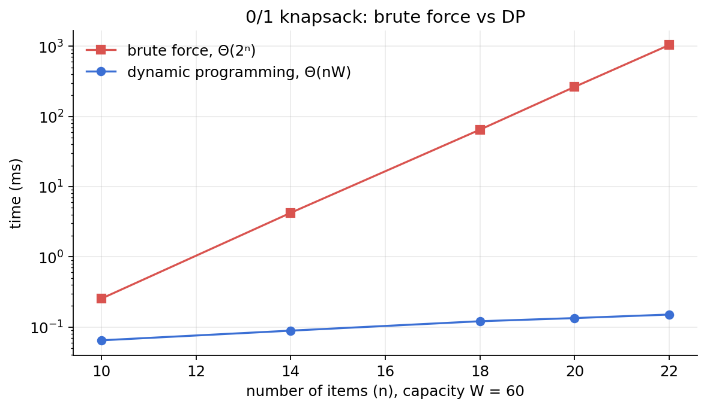

You have a bag that can carry 7 kg and four things you would like to take, each with a weight and a value. You cannot take everything. Which ones go in?
The instinct is obvious: take whatever gives the most value per kilogram, and keep going until the bag is full. It feels right, it is fast, and for this problem it is wrong. Not always, but often enough that you cannot trust it.
This is the 0/1 knapsack problem, and it is the standard example of a problem where the greedy approach fails and dynamic programming succeeds. In this post I show the failure on a small example, build the dynamic programming solution step by step, fill in the table by hand, analyse the time and space, and measure it against brute force.
01The problem
We are given n items. Item i has a weight wᵢ and a value vᵢ. The knapsack has a capacity W. Choose a subset of the items so that the total weight is at most W and the total value is as large as possible.
The "0/1" means each item is either left behind (0) or taken whole (1). No fractions, and no taking the same item twice.
The example used throughout this post:
| Item | Weight | Value | Value per kg |
|---|---|---|---|
| A | 1 | 1 | 1.00 |
| B | 3 | 4 | 1.33 |
| C | 4 | 5 | 1.25 |
| D | 5 | 7 | 1.40 |
Capacity W = 7.
02Why greedy fails
The greedy rule sorts by value per kilogram and takes whatever still fits:
- D has the best ratio (1.40). Take it. Room left: 2.
- B is next (1.33), but weighs 3. Does not fit.
- C (1.25) weighs 4. Does not fit.
- A (1.00) weighs 1. Take it. Room left: 1.
Greedy ends with D + A: weight 6, value 8.
But B + C weighs exactly 7 and is worth 9. Greedy committed to D because it looked best in isolation, and that choice blocked a better combination that fills the bag completely.
That is the heart of it. A greedy algorithm makes one locally best choice and never revisits it. That works for some problems; in my post on Dijkstra's algorithm there is a proof that the greedy choice there can never be undercut later. Here there is no such guarantee, because what the best first item is depends on what else you can fit alongside it.
One variation is worth knowing: if you are allowed to take fractions of items (the fractional knapsack), greedy by ratio is provably optimal. You would take all of D and two-thirds of B. It is the all-or-nothing rule that breaks it.
03The other obvious approach: try everything
Each item is either in or out, so there are 2ⁿ possible subsets. Checking all of them is guaranteed correct:
BRUTE(i, room) // best value using items i..n with `room` capacity left
if i > n: return 0
skip = BRUTE(i + 1, room)
if w[i] > room: return skip
take = v[i] + BRUTE(i + 1, room − w[i])
return max(skip, take)
This is Θ(2ⁿ). For 4 items that is 16 subsets. For 40 items it is over a trillion.
But look at what the function depends on: only i (which item we are up to) and room (how much capacity is left). There are at most n values of i and W + 1 values of room. So there are only about n × W different questions this function can ever be asked, even though it is called up to 2ⁿ times. Most of those calls are repeats.
04The dynamic programming idea
Dynamic programming applies when a problem has two properties, and knapsack has both.
- Optimal substructure. The best answer is built from best answers to smaller problems. If the best packing of a 7 kg bag includes item C, then whatever else is in the bag must be the best packing of the remaining 3 kg using the other items. If it were not, you could swap in a better one and improve the whole thing.
- Overlapping subproblems. The same smaller problems come up again and again, as we just saw.
So instead of recomputing, solve each subproblem once and write the answer in a table.
Define K[i][c] as the best value achievable using only the first i items with capacity c. For each item there are exactly two options, skip it or take it:
K[i][c] = K[i−1][c] if wᵢ > c (it does not fit)
K[i][c] = max( K[i−1][c], vᵢ + K[i−1][c − wᵢ] ) otherwise
└ skip it ┘ └──── take it ────┘
with K[0][c] = 0, because no items means no value. The answer to the whole problem is K[n][W].
05Pseudocode
KNAPSACK(w, v, n, W)
for c = 0 to W:
K[0][c] = 0
for i = 1 to n:
for c = 0 to W:
K[i][c] = K[i−1][c] // skip item i
if w[i] <= c:
K[i][c] = max(K[i][c], v[i] + K[i−1][c − w[i]]) // or take it
// walk back through the table to find which items were taken
c = W
for i = n down to 1:
if K[i][c] != K[i−1][c]:
output item i
c = c − w[i]
return K[n][W]
06Filling in the table
Here is the full table for the example. Each row adds one more item to the set we are allowed to use.

Row A (weight 1, value 1). From capacity 1 upwards, A fits, so every cell is 1.
Row B (weight 3, value 4). Below capacity 3, B does not fit, so the values are copied from the row above. At capacity 3: skip gives 1, take gives 4 + K[A][0] = 4. Take. At capacity 4: take gives 4 + K[A][1] = 5, which is B and A together.
Row C (weight 4, value 5). The interesting cell is capacity 7: skip gives 5, take gives 5 + K[B][3] = 5 + 4 = 9. That is C plus the best use of the remaining 3 kg, which the previous row already worked out was B.
Row D (weight 5, value 7). At capacity 7: skip gives 9, take gives 7 + K[C][2] = 7 + 1 = 8. Skip wins, so the cell stays at 9. This is the exact moment the table rejects the item greedy grabbed first.
The answer is K[4][7] = 9.
Recovering the items
The table gives the value. To find the items, walk back from the bottom-right corner:
| Row | Capacity | Compare with the row above | Decision |
|---|---|---|---|
| D | 7 | 9 = 9, unchanged | D was not taken |
| C | 7 | 9 ≠ 5, changed | C was taken, capacity becomes 7 − 4 = 3 |
| B | 3 | 4 ≠ 1, changed | B was taken, capacity becomes 3 − 3 = 0 |
| A | 0 | 0 = 0, unchanged | A was not taken |
Take B and C: weight 7, value 9. That beats greedy's 8.
07Time complexity
The table has (n + 1) rows and (W + 1) columns, and each cell takes constant time: one comparison and one addition.
Time = Θ(n · W)
The traceback adds Θ(n). There is no best or worst case; the table is always filled completely.
The catch: "pseudo-polynomial"
Θ(nW) looks polynomial, but there is a subtlety. Running time is supposed to be measured against the size of the input, and the number W takes only about log₂W bits to write down. In terms of that size, W itself is exponential. Add one digit to W and the table gets ten times wider.
So this is called a pseudo-polynomial algorithm: fast when W is a reasonable number, hopeless when W is astronomically large. That is consistent with the fact that 0/1 knapsack is NP-hard. No algorithm is known that is polynomial in the true input size, and most computer scientists believe none exists.
| Approach | Time | Always correct? |
|---|---|---|
| Greedy by value per kg | Θ(n log n) | No |
| Brute force | Θ(2ⁿ) | Yes |
| Dynamic programming | Θ(nW) | Yes |
08Space complexity
- Full table: Θ(nW). Needed if you want to recover which items were chosen.
- One row: Θ(W). Each row only ever reads the row directly above it, so if you only need the best value, a single array is enough:
for each item i:
for c = W down to w[i]:
K[c] = max(K[c], v[i] + K[c − w[i]])
The inner loop must run from right to left. Going right to left, K[c − w[i]] still holds the value from the previous item's row. Going left to right, it would already have been updated for the current item, which lets the item be taken twice. That is a different problem (the unbounded knapsack), and a very easy bug to introduce.
09Checking it against real measurements
I implemented all four approaches in Python: brute force, the full table, the one-row version, and greedy.
Correctness. On 2,000 random instances with up to 12 items, both dynamic programming versions matched brute force every time, and the items recovered by the traceback always fitted and added up to the reported value.
How often is greedy wrong? On those same 2,000 instances, greedy gave a worse answer than the optimum on 330 of them, about 16%. One time in six is far too often to rely on.
Speed. Then I timed brute force against the one-row DP as the number of items grew, with capacity fixed at 60 and light items so that brute force could not get lucky by pruning.
| n | Subsets (2ⁿ) | Table cells (n·W) | Brute force | DP |
|---|---|---|---|---|
| 10 | 1,024 | 600 | 0.3 ms | 0.06 ms |
| 14 | 16,384 | 840 | 4.2 ms | 0.09 ms |
| 18 | 262,144 | 1,080 | 64.7 ms | 0.12 ms |
| 20 | 1,048,576 | 1,200 | 263.5 ms | 0.13 ms |
| 22 | 4,194,304 | 1,320 | 1,040.6 ms | 0.15 ms |

The exact times depend on my laptop, but the pattern does not:
- Every two extra items multiply brute force by about four (64.7 → 263.5 → 1,040.6). That is 2ⁿ. At this rate 40 items would take roughly three days, and 60 items thousands of years.
- The DP barely moves, from 0.06 ms to 0.15 ms, because the table only grew from 600 to 1,320 cells.
- At n = 22, dynamic programming is about 7,000 times faster, and the gap doubles with every item added.
10Three design strategies, side by side
This is the fourth design strategy to come up in this series, and it helps to see them together.
| Strategy | How it works | Example | When it is safe |
|---|---|---|---|
| Divide and conquer | Split into independent parts, solve each, combine | Merge sort | The parts do not overlap |
| Decrease and conquer | Reduce to one smaller problem | Binary search | One part can be discarded |
| Greedy | Make the best-looking choice and never go back | Dijkstra | You can prove the choice is never regretted |
| Dynamic programming | Solve every subproblem once and reuse the answers | 0/1 knapsack | Subproblems overlap and the best answer is built from best sub-answers |
A reasonable rule of thumb: if a greedy idea comes to mind, try to find a small counterexample like the one in Section 2. If you find one, and the brute-force recursion keeps asking the same questions, it is a dynamic programming problem.
11Where it is used
- Budgeting and investment selection. Choose projects with the highest total return without exceeding a fixed budget.
- Cargo and container loading, where the limit is weight or volume.
- Cutting stock. Cutting rolls of paper, steel or fabric into ordered sizes with the least waste is built on knapsack subproblems.
- Resource allocation in computing, such as choosing which jobs to run in a fixed time or memory budget.
- Subset sum, the special case where value equals weight, underlies several questions in cryptography and complexity theory.
12Common mistakes worth watching for
- Trusting greedy. It is right often enough to pass a few test cases and wrong often enough to matter.
- Running the one-row loop left to right. This silently solves the unbounded knapsack instead.
- Off-by-one errors between rows and items. Row i of the table refers to item i, but arrays usually start at 0. Row 0 means "no items".
- Forgetting the capacity-0 column. It is needed when an item fills the remaining space exactly.
- Using it when W is enormous. With a capacity in the billions the table does not fit in memory. Other techniques, such as branch and bound or approximation schemes, are used instead.
- Returning only the value when the question asked which items to take. That needs the full table, or extra bookkeeping.
13Summary
- In the 0/1 knapsack problem each item is taken whole or not at all, and the goal is the highest total value within a weight limit.
- Greedy by value per weight is not reliable: it was wrong on about 16% of random instances.
- Brute force is correct but takes Θ(2ⁿ).
- Dynamic programming fills a table using K[i][c] = max(skip, take), in Θ(nW) time and Θ(nW) space, or Θ(W) space if only the value is needed.
- Θ(nW) is pseudo-polynomial: the problem is NP-hard, and the algorithm is only fast when W is modest.
Greedy asks "what looks best right now?". Dynamic programming asks "what is best for every smaller version of this problem?" and then simply looks the answer up. It takes more memory, and in exchange it never has to guess.
REFReferences
- T. H. Cormen, C. E. Leiserson, R. L. Rivest and C. Stein, Introduction to Algorithms, 3rd ed., MIT Press, 2009. Chapter 15 (dynamic programming) and Chapter 16.2 (greedy and the knapsack problems).
- J. Kleinberg and É. Tardos, Algorithm Design, Pearson, 2006. Chapter 6.4.
- R. Bellman, Dynamic Programming, Princeton University Press, 1957.
- H. Kellerer, U. Pferschy and D. Pisinger, Knapsack Problems, Springer, 2004.
- R. M. Karp, "Reducibility among combinatorial problems," in Complexity of Computer Computations, Plenum Press, 1972, pp. 85–103.
- Source code and measurement scripts: github.com/n-3-0-l-d-3-v/umbra